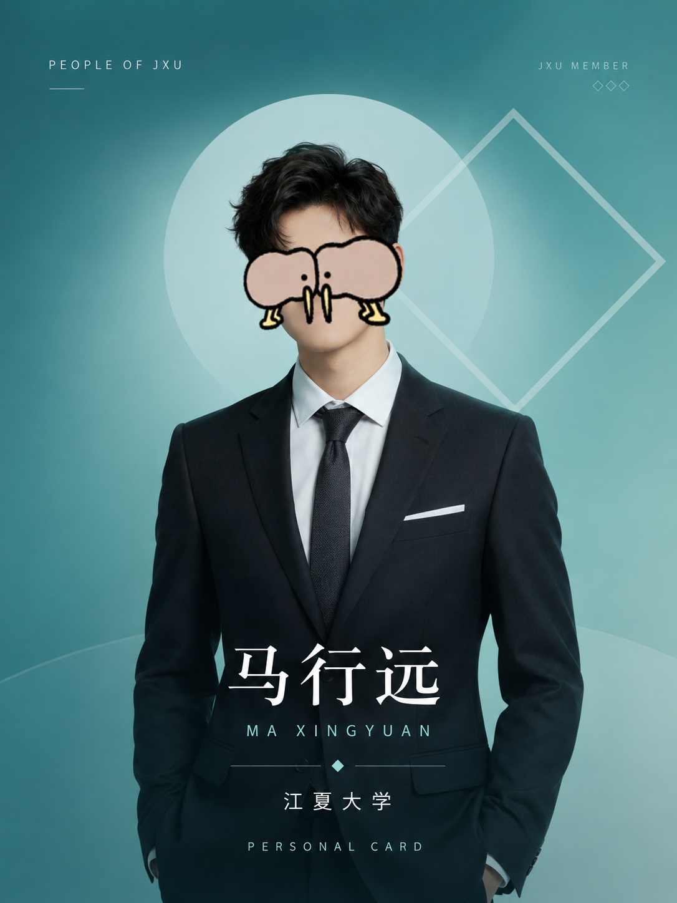

JIANGXIA NEWS
江大要闻
江夏大学召开高质量发展大会，共绘面向未来的育人新图景
学校围绕拔尖创新人才培养、交叉学科建设与开放合作展开深入研讨，发布新一轮发展行动计划。
VIBRANT JXU
活力江大

RESEARCH & DISCOVERY
学术成果

JXU MULTIMEDIA
融媒印象

JXU AT A GLANCE
数字校园
百年老校，历史悠久
办学历史
院系与书院
本科专业
在校学生
校园面积
国家级科研平台
全球合作伙伴
ESI 前 1% 学科
PEOPLE OF JXU
风云人物

材料科学家 · 江夏大学教授
马行远：把实验室里的微小发现，变成面向未来的真实改变
“真正有价值的研究，既要仰望星空，也要能回应脚下的土地。”
长期从事绿色能源材料研究，带领跨学科团队探索基础科学与产业需求之间的新连接。
阅读人物故事 →人文学者 · 历史文化学院
何沐清：在古老文献与数字技术之间重建文化记忆
“人文学科让我们知道从哪里来，也帮助我们判断将走向哪里。”
她推动古籍整理、城市记忆与数字人文交叉融合，让传统文化以更开放的方式走向公众。
阅读人物故事 →青年校友 · 公益创业者
周宇阳：让技术跨越信息鸿沟，为乡村教育带来更多可能
“大学教会我的，不只是解决问题，更是看见那些尚未被看见的问题。”
毕业后发起公益教育项目，以轻量化数字工具服务偏远地区学校与一线教师。
阅读人物故事 →